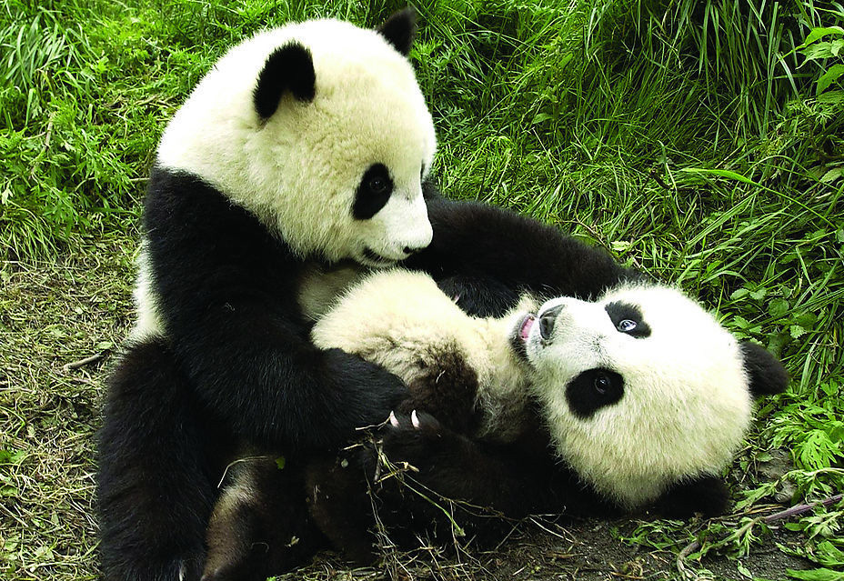

| 大熊猫（学名：Ailuropoda melanoleuca），一般称作“熊猫”，是世界上最珍贵的动物之一，数量十分稀少，属于国家一级保护动物，体色为黑白相间，被誉为“中国国宝”。大熊猫是中国特有种，属熊科，现存的主要栖息地在中国四川、陕西等周边山区。2004年全世界野生大熊猫数量约为1590只。成年熊猫长约120~190厘米，体重85到125公斤，适应以竹子为食的生活。大熊猫憨态可掬的可爱模样深受全球大众的喜爱，在1961年世界自然基金会成立时就以大熊猫为其标志，大熊猫俨然成为物种保育最重要的象征，也是中国作为外交活动中表示友好的重要代表。 |
|  |